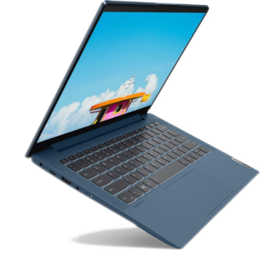

Сегодня практически каждый студент пользуется электронным гаджетом для получения образования, это может быть смартфон, ноутбук или компьютер. Самым удобным для учебы, выполнения практических заданий, поиска информации считается ноутбук. Его можно переносить и им удобно пользоваться из-за наличия клавиатуры и большого монитора. Выбор такого оборудования большой, есть много бюджетных вариантов и известных брендов, которые может предложить оzon.

Как выбрать ноутбук для ребенка студента или школьника
Родители стараются дать своим детям лучшее, чтобы они могли получать хорошее образование. Для этого нужно приложить немало усилий, в том числе купить ноутбук, которым будет пользоваться ребенок. Эксперты советуют не экономить на приобретении оборудования, чтобы студент мог выполнять задания без особых проблем. Часто приходится одновременно делать несколько операций или использовать «тяжелое» программное обеспечение. Поэтому лучше всего приобретать оборудование с качественной видеокартой и процессором нового поколения. Такой ноутбук сможет быстро обрабатывать большое количество запущенных процессов.
Еще один важный фактор – это прочность корпуса. Ноутбук обычно приходится носить с собой, особенно студенту. Поэтому у него должен быть качественный крепкий корпус и долговечные механизмы, которые соединяют монитор с клавиатурой. Хорошо также обратить внимание на батарею, необходимо, чтобы она могла работать долго без подзарядки. Многими потребителями отмечены ноутбуки lenovo ideapad как высококачественная продукция, которая не подведет в дороге или на учебе.
На какие особенности необходимо обратить внимание при выборе электроники
Специалисты рынка бытовой техники и электроники рекомендуют обратиться к отзывам потребителей, которые уже купили оборудование и пользуются им. Впечатления могут быть самые разные, но важно подходить к их изучению объективно. Например, если человек купил маломощный ноутбук и недоволен, что тяжелые программы на нем работают медленно, то такой отзыв можно игнорировать.
Кроме этого, необходимо обращать внимание на бренд. С известными марками обычно нет проблем, так как им важна репутация компании. Более того, с ними не возникнет проблем в будущем. Дело в том, что некоторые комплектующие со временем могут испортиться или пользователь захочет обновить и улучшить свое оборудование. Копании-«однодневки» не всегда могут предоставить качественную базу комплектующих, а бренды, которые завоевали на рынке положительную рекомендацию, не только смогут предоставить комплектующие для обновления или улучшения параметров, но также смогут интегрировать в систему запчасти другого производителя.
С ноутбуком нужно сразу покупать сумку
Приобретение сумки не стоит откладывать на потом. Дело в том, что от этого зависит целостность оборудования. Сумка сохраняет его от механических повреждений, пыли, перегрева и переохлаждения. Поэтому необходимо выбирать изделие из качественного материала и размера, который идеально подойдет для ноутбука.